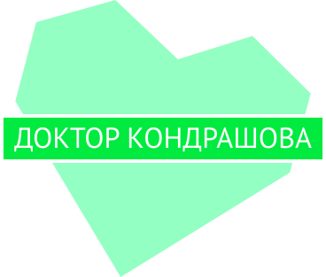
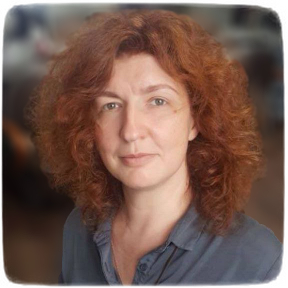

Запись на приём по телефону
+7(927)-550-13-47.
E-mail: jukondrashova@mail.ru

Сведения о медицинском работнике,
Скидки 10-20% предоставляются студентам, педагогам, медицинским работникам, инвалидам, пенсионерам, ветеранам, матерям-одиночкам, детям.


Добро пожаловать на сайт врача
Кондрашовой Юлии Владимировны.
Сведения о медицинском работнике,
предоставляющем платные медицинские услуги
Специализация:
- Терапия, сертификат специалиста № 1166242590542, действителен до 07.12.2025.
- Гастроэнтерология, сертификат специалиста № 1166242590576 действителен до 07.12.2025
Учёная степень: кандидат медицинских наук, диплом КТ № 020457
Режим работы медицинского консультативного кабинета
Прием пациентов ведется по предварительной записи:
- в понедельник, среду и пятницу с 11:00 по 15:00,
- во вторник и четверг с 9:00 по 15:00;
- суббота и воскресенье — выходные.
Сведения об индивидуальном предпринимателе
Место осуществления медицинской деятельности: г. Астрахань, ул. Савушкина д. 48, литер А, помещение 03.
Индивидуальный предприниматель Кондрашова Юлия Владимировна
ОГРН 305301525100011, Свидетельство: серия 30 №000880363, выдано ИФНС по Кировскому району г. Астрахани 08.09.2005 г.
Перечень и стоимость медицинских услуг
| Консультация врача-терапевта (первичная) | 5000 руб. |
| Консультация врача-терапевта (повторная) | 4500 руб. |
| Консультация врача-гастроэнтеролога (первичная) | 5000 руб. |
| Консультация врача-гастроэнтеролога (повторная) | 4500 руб. |
|
Дыхательный уреазный Хелик-тест (неинвазивная диагностика хеликобактерной инфекции) |
1000 руб. |
Скидки 10-20% предоставляются студентам, педагогам, медицинским работникам, инвалидам, пенсионерам, ветеранам, матерям-одиночкам, детям.
Документы
Лицензия (нажмите на изображения для просмотра)
{kind=link}
Сертификаты
Условия, порядок предоставления медицинских услуг и порядок их оплаты